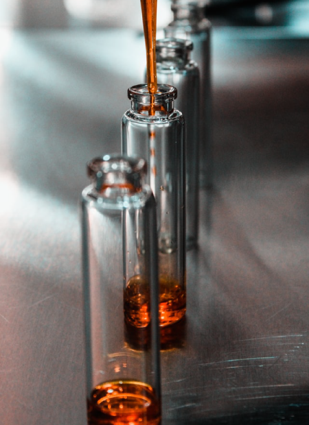
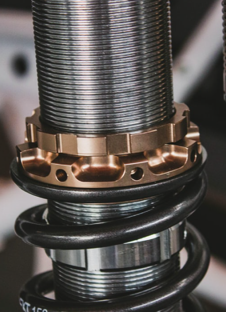
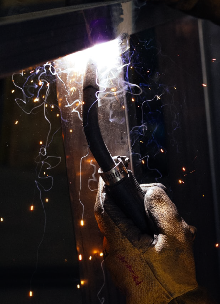
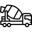

개요
최상의 원료, 최고의 품질, 최고의 기술력과 최신예 설비, 최상의 원료로 생산되고 있는 정형내화물은 제철, 제강, 시멘트, 비철금속, 유리업계 등 국내 외 시장에서 그 우수성을 높이 인정받고 있습니다.
-
- 화학 내화물 제작
- 제품 규격 별 분류
- 배토를 요구형상으로 성형 (연와 치수, 비중관리 필요)
-

- 내화물 연구 제작
- 제품 규격 별 분류
- 성형품 내부의 잔존수분 제거 결합력 증가로 연와강도 향상
-

- 코일 금속 제작
- 제품 규격 별 분류
- 원료를 파쇄하여 입도별 분리 입도별 원료를 Tank에 저장
-

- 마그네틱 금속 제작
- 제품 규격 별 분류
- 재질별, 부호별 User 요구사항 에 따라 Wrap, Pallet 등으로 포장
포스코케미칼은 정형제품, 부정형제품, 클린커/해수마크 및 시멘트/유리 기술 등 4가지 기술을 융합하는 네트워크 기술을 통해 사업영역을 다각화하고 global세계로 나아가고 있습니다.
posco
Netwok Technology
-
Formal product
- 정형제품
- 당사에서 생산하고 있는 100여종의 정형내화물은 열간 용적 안정성, 기계적인 강도 발휘에 알맞은 제품을 적기에 공급함은 물론 수요업체의 요구에 적극 부응하고 있습니다.
-
Material product
- 부정형제품
- 스프레이재, 스탐프재, 턴디쉬코팅재, 캐스터블, 모르터 등 50여종의 부정형 내화물은 엄격한 품질 검사를 거쳐 제조된 최고의 품질로 USER사용 설비의 수명연장 및 생산품의 품질 향상에 기여하고 있습니다.
-
Klinker
- 클린커/해수
- 87년 전자동 해수 마그네시아당사 생산품은 S-95 마그네시아 클린커로 고품위, 고순도, 고비중의 특성으로 내화물의 품질 향상 및 품질의 안정화에 크게 기여하고 있습니다.
-

Cement
- 시멘트/유리
- 포스코케미칼은 사용조건에 따라 효과적인 적정 재질의 제품을 공급함은 물론 설계 및 시공지도, 사용결과 점검 등을 통하여 생산제품의 질적향상에업계의 요구에 적극 부응하고 있습니다.
용도
포스코케미칼은 제철분야(전로,탈가스로,턴디쉬,),제강분야(전기로,래들,특수정련로), 비철금속분야(전로,정전로) 세계로진출하기 위해 많은 제품을 보유하고 있습니다.
-
- Iron,Steel
- 더 높은 제철을 향해 나아 갑니다.
- 고로에서 출선한 용선과 고철을 장입한 후 Lance라는 수냉구조의 Nozzle로 부터 고순도 산소(99.9%이상)를 노내에 초음속으로 취입, 산화정련에 의해 선철중의 탄소, 망간, 규소, 인, 유황등 불순물을 제거하므로써 목표성분 및 목표온도의 용강을 생산하는 설비입니다.
- 최근 청정강 생산을 위해 턴디쉬의 중요성이 부각되고 있으며, 개제물 제거를 위해 다양한 형상 및 재질이 적용되고 있습니다.
- Manufacture
- 세계로 도약한 우리의 제강분야 입니다.
- AC 방식은 전기로 천정에 3개의 전극을 설치한 AC 방식으로 전극과 SCRAP간의 Arc열과 저항열로 고철을 용해하고 정련하는 방식이며, DC 방식은 상하에 전극을 설치하고 직류방식으로 전극과 SCRAP간의 Arc열과 저항열로 고철을 용해 정련하는 방식입니다.
- 각종 조업조건에 적합한 적정재질의 고급내화물을 공급키 위해 가공기술을 확립하여 수요 업체의 고민을 함께 풀어가고 있습니다.
- Nonferrous Metal
- 세계의 대표하는 비철금속 입니다.
- 전로에 사용되는 내화물은 Flex와의 화학반응에 강한 내식성과 Lance에 의한 와류, 각종 냉재와 우구로 공급되는 가스에 의한 손상에 대한 내응력성이 동시에 요구됩니다.
- 불순물이 제거된 Cu 99.5%의 정제 조동은 주조기에서 전련 공정에 투입하기 적합한 형태의 Anode로 주조(Casting)됩니다. 통상 정제공정에는 마그크로연와가 주로 사용되며, 각 부위의 대표적인 재질은 위와 같습니다.